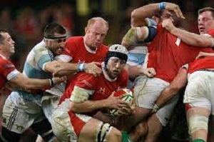
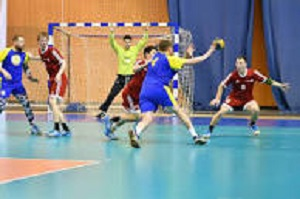

|
|
Basquetbol
Temporada regular de la NBA.
Se acerca el cierre de la temporada regular de la NBA. La lucha por meterse a playoffs está muy apretada. Solo hay cuatro de 30 equipos que ya no tienen ninguna opción de clasificar: Detroit, Houston, Charlotte y San Antonio. Nunca hubo una definición tan apretada en toda la historia de la mejor liga de basquet del mundo.
|
| 
|
Rugby
Como va Selknam en el Súper Rugby Américas
Como va Selknam en el Súper Rugby Américas cuando ya va casi la mitad del torneo. La tabla, su próximo desafío y la importancia para los "Cóndores". Los Chilenos de la franquicia buscan ganarse un puesto en Francia 2023. El super Rugby, ya va casi en la mitad y con Selknam, de momento, clasificando a las semifinales.
|
| 
|
Balonmano
El gran momento del balonmano chileno
El gran momento del balonmano chileno haciendo historia en mundialesEl balonmano Chileno vive un gran momento a nivel de selecciones.Ya en enero el equipo masculino terminó 26° en el Mundial Polonia-Suecia 2023, y hace algunas semanas, la selección femenina clasificó tras 14 años a una cita planetaria.
|